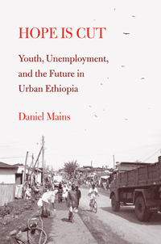

A detailed look at young men in urban Ethiopia that reveals the impact of economic development and globalization
A detailed look at young men in urban Ethiopia that reveals the impact of economic development and globalization


 A detailed look at young men in urban Ethiopia that reveals the impact of economic development and globalization
A detailed look at young men in urban Ethiopia that reveals the impact of economic development and globalization

|  |
Hope Is CutYouth, Unemployment, and the Future in Urban EthiopiaDaniel Mainspaper EAN: 978-1-43990-480-0 (ISBN: 1-4399-0480-4) |
Finalist for the Society for the Anthropology of Work Book Prize, 2007
"Hope Is Cut is a thoughtful, penetrating, and moving analysis of the lives of young men in Ethiopia and how their predicament sheds light on existing debates in social theory regarding time, space, temporal narratives of progress, social stratification, youth, and neoliberal capitalism in Africa. Mains�s book not only looks at an issue of great importance in the contemporary world; it also connects the study of youth to issues in broader social theory. Hope Is Cut should have a wide array of potential applications and a long shelf life."
—Jennifer Cole, Professor, Department of Comparative Human Development, University of Chicago, and author of Sex and Salvation: Imagining the Future in Madagascar
How do ambitious young men grapple with an unemployment rate in urban Ethiopia hovering around fifty percent? Urban, educated, and unemployed young men have been the primary force behind the recent unrest and revolutions in North Africa and the Middle East. Daniel Mains' detailed and moving ethnographic study, Hope Is Cut, examines young men's struggles to retain hope for the future in the midst of economic uncertainty and cultural globalization.
Through a close ethnographic examination of young men's day-to-day lives Hope Is Cut explores the construction of optimism through activities like formal schooling, the consumption of international films, and the use of khat, a mild stimulant.
Mains also provides a consideration of social theories concerning space, time, and capitalism. Young men here experience unemployment as a problem of time—they often congregate on street corners, joking that the only change in their lives is the sun rising and setting. Mains addresses these factors and the importance of reciprocity and international migration as a means of overcoming the barriers to attaining aspirations.
Excerpt available at www.temple.edu/tempress
"Hope Is Cut is unique in focusing on urban unemployment in exploring the difficulty African young men have establishing themselves as independent adults. Beautifully crafted, accessible yet theoretically engaging, it provides a rich ethnographic portrait of youth in urban Ethiopia."
—Cati Coe, Associate Professor of Anthropology, Rutgers University�Camden, and author of Dilemmas of Culture in African Schools: Youth, Nationalism, and the Transformation of Knowledge
""[O]ne can praise [Hope Is Cut] as a case study in which unemployed young men and women in Jimma, Ethiopia, figure out how to move from the 'youth' to 'adult' stages of life.... [P]erhaps because it addresses both the story of individuals and the context of global social and economic change, [the book is] a useful reference tool for an Ethiopian (or other) novelist interested in writing about the subject of unemployed young men and, to a lesser extent, young women."
—The Herald
"[An] engaging study of young men in urban Ethiopia. While the topic cannot be called entirely new, Mains certainly brings a host of innovative perspectives to this wider conversation, and makes an especially valuable contribution to it.... Mains�s book on a timely topic deserves a wide audience."
—Africa
"Hope Is Cut is a moving ethnographic account of educated but unemployed urban youth in Ethiopia.... Mains provides a nuanced analysis of how unemployed young men construct hope.... [The book] makes an important contribution in terms of challenging existing conceptualizations of the social category 'youth.'... [T]he immense importance of this book [is] as a well-documented study of an urban African youth. Hope Is Cut would be excellent ethnographic material especially for undergraduate courses but also for some graduate classes. The book would be an important reading for both academic and applied anthropologists, Africanists of all social sciences backgrounds, development practitioners, government policymakers, and anybody interested in the everyday life of ordinary youth as they confront the realities of growing up in global times."
—American Ethnologist
"[Mains'] ethnographic examination of the everyday life of the unemployed youth and, in particular, his analysis of gifts and exchanges are most valuable. With this book, Mains has surely become a reference in the debate on youth in the continent. Moreover, his account of the unemployed youth in Jimma constitutes an important contribution to refresh the ethnographic imagination of Ethiopian studies, bearing witness to the fact that cultural and social dynamics in urban areas cannot be fully understood under an exclusive lens of ethnicity and ethnic differences."
—The Journal of Modern African Studies
"The book starts with a radiant introduction that sets the basis for later chapters.... This is a book that students and teachers of Anthropology, Development Studies, African Studies, and African Literature should get their hands on. The major pro of this book is the author's ability to re-conceptualize key concepts of youth, progress and unemployment."
—African Studies Quarterly
Series Editor Preface
Acknowledgments
Introduction: Youth, Hope, Stratification, and Time
1. The Historical and Cultural Roots of Unemployment and Stratification in Urban Ethiopia
2. Imagining Hopeful Futures through Khat and Film
3. �We Live Like Chickens; We Are Just Eating and Sleeping�: Progress, Education, and the Temporal Struggles of Young Men
4. Working toward Hope: Youth Unemployment, Occupational Status, and Values
5. Hopeful Exchanges: Reciprocity and Changing Dimensions of Urban Stratification
6. Spatial Fixes to Temporal Problems: Migration, Social Relationships, and Work
Conclusion: Sustaining Hope in the Present and the Future
Notes
References
Index
Daniel Mains is Wick Cary Assistant Professor of Honors at the University of Oklahoma.
Anthropology
African Studies
Youth Studies
Global Youth, edited by Craig Jeffrey and Jane Dyson.
The Global Youth Series, edited by Craig Jeffrey and Jane Dyson, comprises research-based studies of young people in the context of global social, political and economic change. The series brings together work that examines youth and aspects of global change within sociology, anthropology, development studies, geography, and educational studies. Our emphasis is on youth in areas of the world that are often excluded from mainstream discussions of young people, such as Latin America, Africa, Asia and Eastern Europe, but we also welcome studies from Western Europe and North America, and books that bridge the global north and global south.
© 2015 Temple University. All Rights Reserved. This page: http://www.temple.edu/tempress/titles/2128_reg.html.